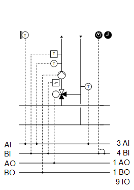
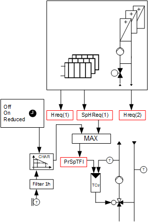

[HCr22] Heating circuit, precontrol
Plant example HCr22 is a heating circuit for precontrol.
Functions
- Collect heating requests
- Heating curve (implemented with function block CHAR_LIN)
- Heating limit
Plant diagram

Components
- Pump
- Valve
- Flow and return temperature sensors
- Sensor for outside temperature
Components and functions of the plant example:
Component | Function | BACnet object |
|---|---|---|
| Scheduler program Switches the plant to operating mode: Off | On It can also specify operation at a reduced flow temperature setpoint. | [MSchedule] Scheduler |
| Operating mode switch Switches the plant to: Auto | Off | On | [MI] Operating mode switch |
| Manual operating mode selection Switches the plant to: Auto | Off | On | [MCnfVal] Manual operating mode selection |
| Present operating mode Reports the present operating mode: Off | On | [MCalcVal] Present operating mode |
| Reason for present operating mode Reports the reason for the present operating mode: Exception | Operating mode switch | Manual operating mode selection | Heating limit | Heat request | Scheduler | [MCalcVal] Reason for present operating mode |
| Demand Reports demand to heat generation: No | Yes | [BCalcVal] Demand |
| Sensor for outside temperature Measures outside temperature. | [AI] Outside air temperature |
| Heating curve Outside temperature-controlled flow temperature control is implemented with function block CHAR_LIN. |
|
| Reduction in flow temperature setpoint Reduces the flow temperature setpoint downward along a linear shift. | [ACnfVal] Setpoint reduction |
| Overtemperature detector Monitors the flow temperature. At a high temperature, the mixing valve switches to bypass and keeps the pump switched on, for example, for 10 minutes. The plant then switches off. | [BI] Overtemperature detector |
| Flow temperature sensor Measures the flow temperature. | [AI] Flow temperature |
| Pump |
|
Command Switches on/off the pump as needed. | > [BO] Command | |
Fault message Reports faults. Switches the plant off. | > [BI] Fault | |
Pump run when the outside air temperature is low Pump always operates at low outside temperatures (frost protection). |
| |
Kick function (pump kick) Prevents the pump from seizing during long idle periods. |
| |
| Return temperature sensor Measures the return temperature. | [AI] Return temperature |
| Mixing valve Mixes the required amount of water from return to flow to achieve the desired flow temperature. |
|
Temperature controller Controls the flow temperature. | > [Controller] Temperature controller | |
Positioning 0% = Bypass … 100% = Through-port | > [AO] Position |


 Pump (
Pump (


Plant example HCr22 is a heating circuit for precontrol. HCr22 can be used as a simplified heating circuit for radiators (with a linear heating curve, a setback defined by a scheduler and without room sensor).
Outside temperature
The outside temperature [TOa] is used unfiltered and filtered. Two different attenuated signals result from the filtering.
Signal name | Description | Filter constant | Use |
|---|---|---|---|
TOa | Outside temperature | Unfiltered |
|
TOaEff | Effective outside air temperature | 1h |
|
TOaBldg | Outside temperature, strongly filtered | 50h (Building constant) |
|
Function heating limit
Both filtered outside temperatures are considered.
The plant is enabled for automatic mode, e.g. by the scheduler, if both filtered outside temperatures are below the value from [HtgLm]. The plant is not enabled for automatic mode if one of the two values exceeds the value from [HtgLm].
BACnet objects
Name | Description | Object type | Default value |
|---|---|---|---|
HtgLm | Heating limit | ACnfVal | 15 [°C] |
Gather heat requests
The heat request can be gathered from different consumers. Binary demand messages and analog demand setpoints can be collected.
The program receives an input block of type R_B that can be linked to a binary demand message via BACnet and an input block of type R_A for an analog demand setpoint.
[R_B] Read binary
[R_A] Read analog
Additional demand signals can be connected in parallel: Binary to an OR and analog to a MAX block.
Flow temperature control

The setpoint for flow temperature is the maximum from the setpoints from heat requests (SpHReqX) and the flow setpoint calculated using a linear heating curve.
Key
Hreq(1), Hreq(2) | Heating request |
SpHReq | Setpoint for heating request |
PrSpTFl | Present flow temperature setpoint |
TCtr | Temperature controller |
BACnet objects
Name | Description | Object type | Default value |
|---|---|---|---|
PrSpTFl | Present flow temperature setpoint | ACnfVal | 45 [°C] |
SpTFlDs | Flow temperature setpoint for design outside temperature | ACnfVal | 30 [°C] |
SpTFlHi | Flow temperature setpoint for high outside temperature | ACnfVal | 30 [°C] |
TOaDsgn | Design outside temperature | ACnfVal | -11 [°C] |
TOaHi | Outside temperature high | ACnfVal | 15 [°C] |
The scheduler [MSchedule] specifies a certain operating mode and can also specify operation at a reduced flow temperature setpoint (Off, On, Reduced).
During operation at a reduced flow temperature setpoint, the value from [SpRdc] is subtracted from the setpoint as calculated by the heating curve.
BACnet objects
Name | Description | Object type | Default value |
|---|---|---|---|
SpRdc | Setpoint reduction | ACnfVal | 10 [K] |
Vlv'TCtr | Temperature controller Controls the flow temperature. | Controller | N/A |
The temperature controller acts as a PI controller (PID with derivative action time Tv=0) and compares the temperature setpoint [PrSpTFl] against the flow temperature [TFl] and calculates the valve position [Pos] on the output. The following controller variables are preset: | |||
If plant power must be reduced, e.g. during charging of the hot water storage tank, connect input [YCtrMax] of the temperature controller to a limitation signal, e.g. via BACnet.
Plant operating modes:
- Off (1)
- On (2)
The operating modes are reported on [MCalcVal] object 'Present operating mode'.
At the same time, the reason for the present operating mode is reported to another [MCalcVal] object:
- Exception (1)
- Operating mode switch (2), resulting from an active (not equal to Auto) operating mode switch
- Manual operating mode selection (3), resulting from an active (not equal to Auto) manual operating mode selection
- Heating limit (4)
- Heat request (5)
- Scheduler (6), resulting from an active scheduler
There is a normal mode and local exception mode.
Normal operation
Sources for normal mode:
- [MI] Operating mode switch
- [MCnfVal] Manual operating mode selection
- Heating limit
- Heat request
- [MSchedule] Scheduler
In normal mode, components are simultaneously switched on and off as per the operating mode.
Exception mode
Sources for exception mode:
- Pump fault
- Overtemperature detector
In exception mode, all outputs are switched off directly at priority 5 (the mixing valve is switched to bypass) and the present operating mode is set to 'Off'.
Local exception mode (special case for overtemperature detector)
The pump remains on, for example, for 10 minutes if the overtemperature detector is triggered. The pump is then switched off. The outputs [AO] valve position and [BO] pump command are switched at priority 4.

The overrun described above may need to be adapted in the program depending on the application and installation. For example, it may have to be set to 0 for floor heating.
Start-up control (nested chart SttUpAlmHdl)
The following functionality is available for an automatic startup of the plant, e.g. after a loss of power and return of power:
- Fixed switch-on delay (can be set on input pin [DlySttUp])
- The plant remains off to ensure communications are reliable and cross-check references are triggered. 'Exception' is reported as the reason for the present operating mode.
- Automatic acknowledge (2x) of possible pending alarms during a fixed switch-on delay.
- Additional adjustable delay for staged plant ramp-up (can be set on input pin [DlyOn])
Alarm handling (nested chart SttUpAlmHdl)
The state of events on the plant is acquired by BACnet object 'Plant state'. The state is mapped on function block CMN_EVT.
[CMN_EVT] Common event
The following functions are available:
- Automatic acknowledge (2x) after startup
- Alarm acknowledgement with a value object
- Alarm indication:
- For pending alarms On
- For unprocessed alarms flashing - Ability to connect the acknowledge button [BI]
- Ability to connect to an alarm indication [BO], e.g. an alarm lamp through an output block [BO]
- Ability to connect to other alarm handling functions on other plants, e.g. acknowledge button and alarm indication for multiple plants in the same control cabinet
Name | Description | Type | Signal/connection | State text | Engineering unit |
|---|---|---|---|---|---|
OpModSwi | Operating mode switch | MI | N/A | Auto | Off | On | N/A |
TOa | Outside temperature | AI | LG-Ni1000 | N/A | -70...70 [°C] |
TFl | Flow temperature Alarm function: Basic (Notification class 8) Limit high 90 [°C]; limit low 4 [°C] Time deviation: 30 [s] | AI | LG-Ni1000 | N/A | 0...100 [°C] |
TRt | Return temperature Alarm function: Basic (Notification class 8) Limit high 90 [°C]; limit low 4 [°C] Time deviation: 30 [s] | AI | LG-Ni1000 | N/A | 0...100 [°C] |
OvrTDet | Overtemperature detector Alarm function: Basic (Notification class 8) Reference value: Tripped Time deviation: 0 [s] | BI | NO contact | Normal | Tripped | N/A |
Vlv-Pos | Valve position | AO | 0...10V | N/A | 0...100 [%] |
Pu'Cmd | Pump command | BO | NO contact | Off | On | N/A |
Pu'Flt | Pump fault Alarm function: Extended (Notification class 7) Reference value: Tripped Time deviation: 0 [s] | BI | NO contact | Normal | Tripped | N/A |